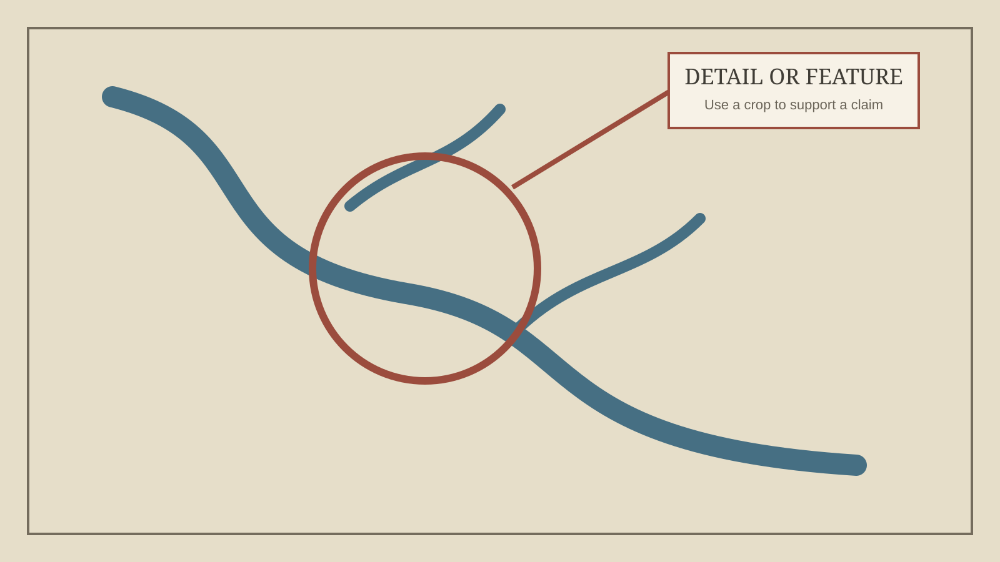

This paragraph is deliberately written as sample copy rather than as part of the eventual argument. Its purpose is to show how a long-form essay will feel at ordinary reading size. A map displayed in a browser must still work as an object of sustained attention: the text should be comfortable, the images should be large enough to inspect, and neither should fight the other.
The working design uses a narrow reading column and wider figures. That distinction matters for an illustrated cartographic essay. Prose becomes tiring when lines stretch across the full screen, while maps often need more horizontal space than prose does. The page therefore changes width according to what the reader is looking at.
Maps and practical situations
A pragmatist account begins by asking what a representation does within a situation. This does not require denying that a map can be careful, accurate, or evidential. It directs attention toward the work by which certain facts are selected, arranged, compared, and made consequential for a reader.
On the finished page, this section might introduce the theoretical problem in relatively ordinary language. A later paragraph could then connect that problem to the map's unusual organization, allowing the object itself to carry part of the explanation.

Comparison as an argument
When rivers from distant parts of the world are placed beside one another, geographic separation gives way to another kind of relation. Length, direction, tributaries, and visual form become available for comparison. The map's arrangement is therefore already interpretive: it proposes what should be seen together and what kind of judgment that comparison permits.
This sample section also tests headings, paragraph spacing, and the transition back from a wide image to a narrower text column. You can revise the design later without changing the conceptual organization of the essay.
What the reader is being asked to do
The final section could return to the reader's activity. Rather than treating the map as a transparent container of information, the essay might describe how the reader learns to notice, compare, and infer. The map becomes a tool for organizing inquiry, not simply a finished answer.
Sources and image credits
- Replace this line with the full citation for the map.
- Replace this line with any theoretical or historical sources.
- State the holding institution and reuse status for every image.